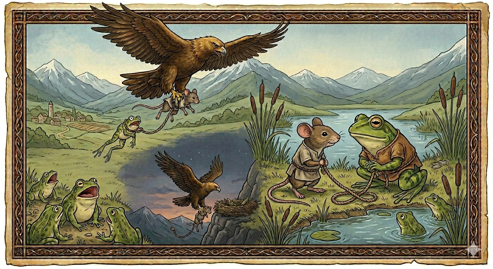

И.А. Дахкильгов. Хьехаме дувцарш - поучительные рассказы-притчи.
И.А. Дахкильгов. Хьехаме дувцарш - поучительные рассказы-притчи. Из ингушского фольклора.

ДоттагӀал хьанца тос ха деза
Цкъа дахкои пхьидои доттагӀал тесса хиннад. Цул тӀехьагӀа къасташ дахко аьннад: - ДоттагӀий а хинна дӀа-м ма къастий вай, цхьанне вокханна новкъостал де дезача хана а, бӀаргаго дог эттача хана а ховрг мичад вайна, хьо хи чу ма яхий, со къорга чу ма бахий, воайла вӀашагӀа детталургдолаш цхьа белгало е еза вай. - Мегаьд, хӀаьта, - аьннад пхьидо, - шинне а когех тӀӀирг ехка еза вай. ЦаӀ вокханна эшаш хилча, тӀиргах катоха мара езац вай, цунах ховргда вайна вӀашагӀакхета дезалга. ЦаӀ вокхана новкъостала а ухаш, уж хоза бахача хана дахкилг хиннаб баь тӀа ловза арабаьнна. Из бӀарга а байна, тӀакхийта аьрзе лаьцаб. Дахкилг аьрзе урагӀа хьоча хана, хи чура пхьид а аратокхаяьй. ХӀанз фу леладу Ӏа, хьай лоӀамах йоацаш хьувз мотт сона хьо, яхаш хиннад из юххе гӀолла тӀехйоалаш новкъосташа-пхьидарчаша. - Айса гӀулакх доацаш хетта гаргало еце, даьра хац сона-ма ер фуд, - аьнна, жоп деннад пхьидо новкъосташта. ХӀаьта аьрзена дахкилечи пхьидеи шиъ кхаьчад цар тасса ца деза доттагӀал вӀаший тесса хиларах.
РУССКИЙ
Надо знать, с кем дружить
Как-то подружились мышка и лягушка. Расставаясь, мышка сказала: - Заключили мы дружбу и расходимся по делам. А ежели возникнет срочное дело или захотим просто повидаться, как же мы найдем друг друга? Нам необходимо придумать, как оповещать один другого. - Хорошо, сказала лягушка, - давай к твоей и к моей лапкам привяжем веревочку. Если кто из нас понадобится другому, то достаточно будет дернуть за веревочку, и мы встретимся. Так они и поступили, дергали за веревочку и часто встречались. Раз мышка шныряла по лугу. Увидел ее орел, налетел, схватил и понес вверх. Следом за мышкой веревочка вытащила и лягушку. Увидели ее болотные подружки и заквакали: - Что это тебя понесло в небо, знать, не по своей воле летишь? - Несет меня дружба, которую не следовало заключать, - ответила им лягушка. Ну а орлу на ужин досталась и мышка, и лягушка, которым надо было знать, что дружить надо с ровней.
ENGLISH
You need to know who to be friends with
One day, a mouse and a frog became friends. As they were parting ways, the mouse said: 'We've become friends and are now going our separate ways. But if an urgent matter comes up, or if we simply want to see each other, how will we find one another? We need to work out a way to let each other know.' 'All right,' said the frog, 'let's tie a string to your paw and mine. If one of us needs the other, all we'll have to do is give the string a tug, and we'll meet up.' So that's what they did; they tugged at the string and met up often. One day, a mouse was scurrying about in the meadow. An eagle spotted her, swooped down, snatched her up and carried her away. Following the mouse, the string pulled the frog up too. Her marsh friends saw her and croaked: 'What's carried you up into the sky? Surely you're not flying of your own free will?' 'I'm being carried by a friendship I shouldn't have made,' replied the frog. And so the eagle had both the mouse and the frog for his supper - they should have known that one ought to be friends only with one's equals.
НОХЧИЙН
ПОГОВОРКИ
Бежан дулхаца бежана дилла тол, хьаккхий дулхаца тол хьакхий дилла. Вареной говядине соответствует говяжий бульон, свиному мясу – свиной. Beef broth belongs with beef, pork broth belongs with pork. Уьстаг1ан жижигах уьстаг1ан хьацам тоьар ду, хьакхин жижигах хьакхин хьацам тоьар ду.ГӀомара тӀа гӀала оттаяьяц. На песке башню не ставят. A tower cannot be built on sand. Хаьмна т1ехь г1ала ца оттадо.Даьттеи хийи мелла цхьана кхехкадарах вӀашагӀийнадац. Сколько бы в одном котле ни варили воду и масло, они никогда не смешиваются. No matter how long you boil oil and water together, they never mix. Даьтта а хи а цхьана кхийсна а вовшашка ца до.Къаеннача аьрзи пхьидашка яьннай. Состарившись, орел стал питаться лякушками. In its old age, the eagle came to feed on frogs. Къенвелла аьрзу пхьид даа хийтта.Лергех вир дайзад, йоагӀача хьажах хьакха ейзай. По ушам осла узнали, по запаху – свинью. The donkey was recognised by its ears, the pig by its smell. Вир лергашка т1ехь бевзаш ю, хьакха хьожах т1ехь бевзаш ю.Лоха саг дегала хул, лакха саг энжи хул. Низкорослый человек мнителен, высокий – неуклюж. A short man tends to be suspicious; a tall man tends to be clumsy. Лоха стаг сакъердаме хуьлу, лакха стаг эрзи хуьлу.Оапаш бувцачох сихагӀа вада, хьайна тийшар балехьа. Беги быстрее от лжеца, пока он не сделал тебе какую-нибудь пакость. Run fast from a liar before he does you harm. Харцахочух сихонца дала, цо хьуна вон дала хьалха.Сага тац цхьан кога тӀа икх йолаш, вокхан тӀа хулчи йолаш хилар. Негоже, когда на одной ноге сапог, а на другой – чувяк. It's unseemly to have a boot on one foot and a slipper on the other. Стеган цхьана когах эткаш, вукхунах маьчеш хилар товш дац.ТӀехьагӀа дехкеваргвола хӀама ма де. Не делай того, в чем после раскаешься. Don't do what you would come to regret. Т1аьхьа дехка дан дезарг ма де.Хьакхеи чаи цхьан хьунагӀа яьже а, вӀаший тац. Кабан и медведь в одном лесу пасутся, а вместе не уживаются. The boar and the bear graze in the same forest, but they don't get along. Хьакха а ча а цхьана хьуна чохь яьжа, амма вовшашца тац.“ЦӀагӀаравар лалва са, со харца луй!” – яьхад воча сесаго. “Пусть мой домашний (муж) умрет, если я лгу!” – говорила плохая жена (лгунья). "May my own husband die, if I'm lying!" said the bad wife. «Ц1ара волу мар волла со, харц лийна велахь!» – аьлла вон зудчо.Шурийга хьежжа хул даьтта. Каково молоко, таково и масло. As the milk is, so is the butter. Шурина хьежжа хуьлу даьтта.